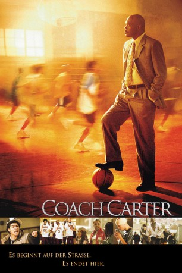

#4998 Coach Carter
 
 IMDB-Wertung: 7.2 / 10
IMDB-Wertung: 7.2 / 10  Tomatometer: 64
Tomatometer: 64  Metascore: 0
Metascore: 0 
Basierend auf einer wahren Begebenheit erzählt Coach Carter die mitreißende Geschichte des umstrittenen Basketball-Coachs Ken Carter (Samuel L. Jackson). Hoch gelobt, aber auch heftig kritisiert macht Carter landesweit Schlagzeilen: Aufgrund schlechter schulischer Leistungen der Spieler lässt Carter die Sporthalle der Highschool für sein bisher unbesiegtes Team schließen. Mit massiven Protesten wollen Spieler, Eltern und die Gemeinde das Team zurück auf das Spielfeld bringen. Carter muss viele Widerstände überwinden, um den jungen Männern eine Zukunft jenseits von Banden, Drogen, Gefängnis und sogar Basketball zeigen zu können.
Jahr: 2005
Dauer: 130 Minuten
FSK: 6
Land: USA Studio: Paramount PicturesTonspuren: DD5.1 - ,
Untertitel:
Auflösung: 1080p (1920x800) Größe: 11366 MB
Genre: Drama, Sport
Regisseur: Thomas Carter
Drehbuch: Charles Dickens
Soundtrack:
Darsteller:
 Samuel L. Jackson als Coach Ken Carter
Samuel L. Jackson als Coach Ken Carter Rob Brown als Kenyon Stone
Rob Brown als Kenyon Stone- Robert Ri'chard als Damien Carter
 Rick Gonzalez als Timo Cruz
Rick Gonzalez als Timo Cruz- Nana Gbewonyo als Junior Battle
 Antwon Tanner als Worm
Antwon Tanner als Worm Channing Tatum als Jason Lyle
Channing Tatum als Jason Lyle- Ashanti als Kyra
- Texas Battle als Maddux
 Denise Dowse als Principal Garrison
Denise Dowse als Principal Garrison Debbi Morgan als Tonya
Debbi Morgan als Tonya Vincent Laresca als Renny
Vincent Laresca als Renny- Sidney Faison als Ty Crane
 Octavia Spencer als Mrs. Battle
Octavia Spencer als Mrs. Battle Sonya Eddy als Worm's Mother
Sonya Eddy als Worm's Mother Gwen McGee als Kenyon's Mother
Gwen McGee als Kenyon's Mother- Adam Clark als Gruff Uncle
 Paul Rae als Guardian
Paul Rae als Guardian- Adrienne Bailon als Dominique
- Dana Davis als Peyton
 Bob Costas als Himself
Bob Costas als Himself Ray Baker als St. Francis Coach
Ray Baker als St. Francis Coach- Lacey Beeman als Susan
 Marc McClure als Susan's Dad
Marc McClure als Susan's Dad- Kara Houston als Amber
- Carl Gilliard als Store Clerk
- Carolina Garcia als Bella
 Jenny Gago als President Martinez
Jenny Gago als President Martinez Ben Weber als Mr. Gesek
Ben Weber als Mr. Gesek- Sylva Kelegian als Office Assistant
- Marcus Woodswelch als Teacher
- Tracey Costello als Field Reporter
- Deena Dill als Field Reporter
 Andy Umberger als Bay Hill Athletic Director
Andy Umberger als Bay Hill Athletic Director Leonard L. Thomas als Preseason Game Referee
Leonard L. Thomas als Preseason Game Referee- Clyde Goins als Team Manager
- Cindy Chiu als Bay Hill Cheerleader
- Diana Charles als St. Francis Cheerleader
- Chauntal Lewis als St. Francis Cheerleader
- Michelle Boehle als St. Francis Cheerleader
- Anna Zielinski als St. Francis Cheerleader
 Tanee McCall als Dancer
Tanee McCall als Dancer- Allison Kyler als Dancer
- Brandon Phillips als Dancer
- Robert Hoffman als Dancer
- Marty Dew als Dancer
- Susyn Elise Duris als Parent
 Danielle McKee als Additional Richmond Player
Danielle McKee als Additional Richmond Player- John Barry als St. Francis Player, #31 , uncredited
- Jerry Buys als Bay Hill Assistant Coach , uncredited
Datei: X:\2005(A-F)\Coach Carter (2005, FSK6, 1920x800).mkv seit 07.12.2016
Festplatte: HD 2003-2004-2005(A-F)
 Es gibt insgesamt 49 Filme in der Gruppe '2005(A-F)'
Es gibt insgesamt 49 Filme in der Gruppe '2005(A-F)'